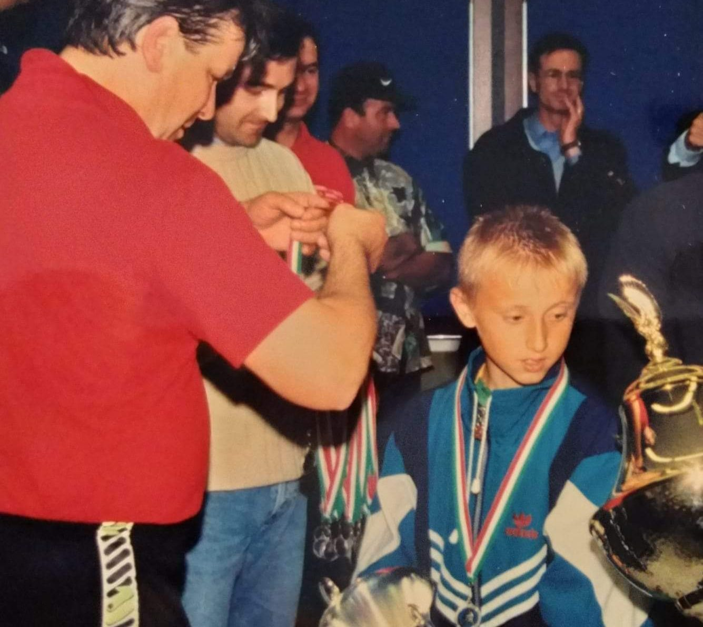

Luka Modric was born on September 9, 1985, in Zadar, Croatia, spending most of his early childhood in the tiny village of Modrici. His life revolved around spending time with family, farming, and life in the countryside. His grandfather, who was also named Luka, was one of the most important figures in his life growing up.
His grandfather took him everywhere: to tend the goats, walk through the hills, and spend afternoons together. Modric would call him his “protector.”
Those peaceful walks when the sun cast an orange ray among the atmosphere would quickly disappear overnight. In 1991, when Luka was only six years old, the Croatian War of Independence reached his small village.
His grandfather would pass after Serb rebels invaded his family’s home. Shortly after, his house burned down, forcing him and his family to flee with almost nothing to their names. His father would also join the Croatian army soon after, leaving young Luka to often tend to himself.
Instead of growing up in a home, Luka spent his years living as a refugee in hotels in Zadar. Thousands of refugees affected by the war lived together, where bombs would often rumble the ground they stood on. Air-raid sirens became part of their daily lives.
With all the noise and worries in his life, the only thing Modric could turn to was football. The hotel parking lot became his soccer field. Goalposts were makeshift, pavements were rough on his feet, and the occasional bomb would go off in the distance. Yet, every afternoon, kids would come to the parking lot to forget about the events occurring in their lives for a short period of time. Football came to be one of the few places where the thought of war could disappear. The young Modric was often shielded from the politics and horrors of war, protected by his parents.
After living through war, the pressures of football would never faze him. He explained that losing a match could not compare to losing a family member or being forced to abandon your home. This characteristic made him a key player on the field. He never panicked. Whether Croatia is losing a World Cup match or his club team is under pressure, he rarely seems anxious or frustrated.
“Sometimes football isn't just a game. Sometimes it's the one place where hope can survive.”
As Modric grew to be a famous player, playing on one of the greatest clubs, Real Madrid, he always stayed humble. His experience as a youth shaped him, refusing to act out in hatred and never blaming the war for the terrible things that occurred in his life, as he knows his experience is not special to the millions of other children affected by the tragedy.
When Modric played, it was clear that he was better and more intelligent in the club; however, he was too small, too skinny, and physically weak. One of Croatia’s biggest clubs would decline to sign him because of his stature. He would quickly rise to stardom, developing as a youth in NK Zadar, then Dinamo Zagreb, finally being recognized by Premier League teams and joining Tottenham Hotspur, before making it to Real Madrid.
In 2018, he would accomplish something that would show the world that he was one of the best midfielders of the generation when he won the Ballon d’Or. His victory, when he raised the trophy, represented the years of excellence and the hard journey he had undergone, starting from a skinny kid trying to forget about the tragedies of war as he played in that hotel parking lot.
References
Sources
- FIFA. Luka Modrić Interviews and Features. (external link)
- UEFA. Luka Modrić Player Profile. (external link)
- BBC Sport. Luka Modrić Features. (external link)
- The Guardian. “Things That Aren’t Nice Happen in War, but I Don’t Have Hate.” (external link)
- Encyclopaedia Britannica. Luka Modrić Biography. (external link)
- Real Madrid. Official Luka Modrić Profile. (external link)
- Encyclopaedia Britannica. Croatian War of Independence. (external link)